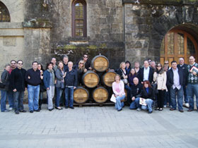
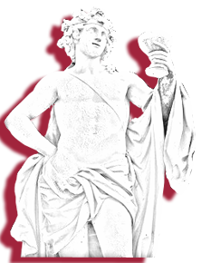

A little about John & Rich:
John Kopilow-John began his career in the wine industry working at Chimney Rock Winery in the beautiful Stags Leap District of Napa where he gained a valuable wine education. He then moved on to the Chauffeur/Tour Guide world where he was a top driver and eventually became Chauffeur Manager. He served in that capacity until 2014 when he began Bacchus Wine Tours. He loves to share his knowledge gained over the past decade and design a custom experience for his clients.
Rich Martin-Rich is a 40 year resident of Sonoma and after a long career in the food logistics industry he pursued his passion of sharing his knowledge and love of the wine country which has been his home. Rich also worked in the wine tour industry with John and chose to join forces to create Bacchus Wine Tours & Transportation.
Why us?
Bacchus WIne Tours & Transportation is co-owned and operated by Rich Martin and John Kopilow. They bring a combined 17 years of wine tourism experience and knowledge which will ensure that you have a memorable day in the wine country offering:
-Personal Concierge Service
-Custom Itinerary Preparation
-Picnic Setup
-Connections to "hidden gems" of the Napa & Sonoma Valleys
-We are quickly responsive to your requests.
We value your input when scheduling your wine tour and will work dilligently to create a day beyond expectations!